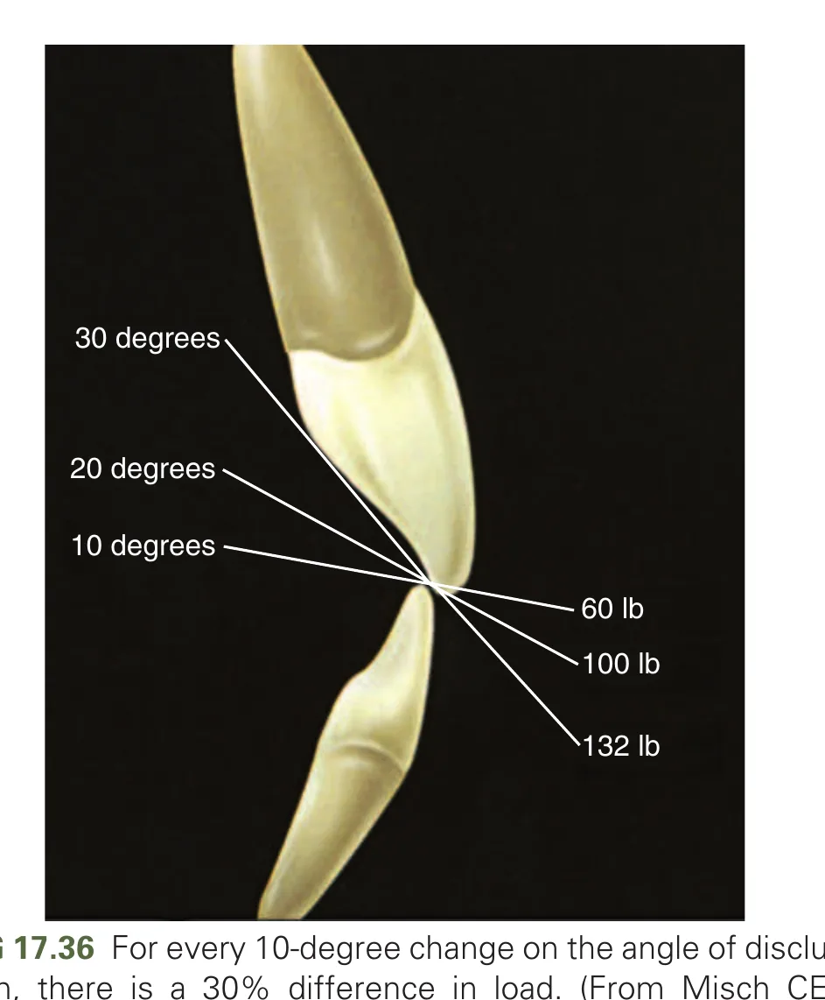
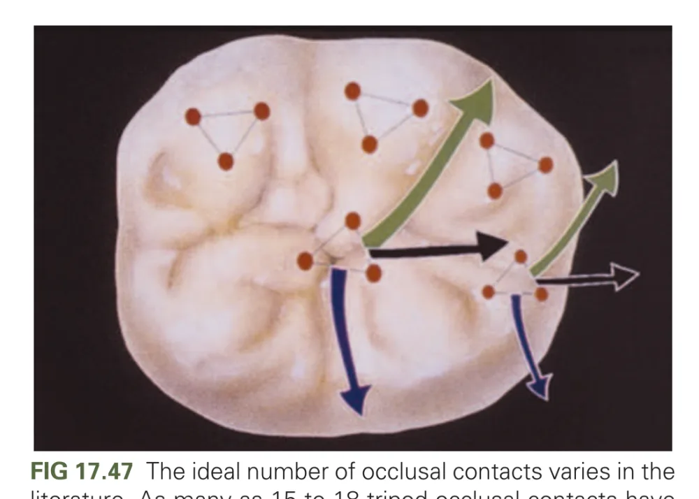

نسخه استخراجشده؛ ترجمه یا تأیید علمی انجام نشده است. وضعیت: captured
اصل پنجم IPO میگوید «گاید قدامی کمشیب». این بخش با عدد نشان میدهد چرا.
یک قاعدهی عددی: «بهازای هر ۱۰ درجه تغییر در زاویهی دیسکلوژن، ۳۰ درصد تفاوت در بار وجود دارد.»
ده درجه، سی درصد. این یک قاعدهی سرانگشتی قدرتمند است که میتوانی در طراحی به کار ببری: هر ۱۰ درجهای که گاید را کمشیبتر کنی، حدود ۳۰ درصد بار کمتر.
و یک تشدیدکنندهی دوم که روی آن سوار میشود:
«افزایش بار ناشی از زاویهی گاید انسیزال، بیشتر با ارتفاع تاج بالای تماس اکلوزالی اولیه (یعنی اوربایت عمودی) ضرب میشود، چون بهعنوان یک بازوی اهرم عمل میکند در حالی که مندیبل روی سطح شیبدار سُر میخورد.»
پس دو متغیر مستقل: زاویهی گاید و اوربایت عمودی — و اثرشان ضربی است نه جمعی.
و اعداد هدف که باید بدانی:
«اوربایت عمودی ایدهآل در پروتز ۵ میلیمتر گزارش شده و اغلب بیشتر هم هست، بهویژه در بیماران انگل کلاس II دیویژن ۲.»
اما برای ایمپلنت اعداد متفاوتاند: «با این حال، بهویژه در بیماران پارافانکشنال، گاید انسیزال باید تا حد ممکن کمشیب باشد در پروتزهای ایمپلنت (۲۳ تا ۲۵ درجه) و اوربایت عمودی به کمتر از ۴ میلیمتر کاهش یابد، ولی دندانهای خلفی باید در اکسکورسیونها دیسکلود شوند.»
سه عدد را نگه دار: گاید ۲۳ تا ۲۵ درجه، اوربایت کمتر از ۴ میلیمتر، و شرط الزامی دیسکلوژن خلفی.
و اکنون همان قاعدهی ۳۰ درصد را با عدد ببین: «یک نیروی ۱۰ درجه روی ایمپلنتهای قدامی با بار ۶۸ psi، وقتی گاید انسیزال ۲۰ درجه شود به ۱۰۰ psi افزایش مییابد و اگر گاید انسیزال ۳۰ درجه باشد بیشتر تا ۱۳۲ psi افزایش مییابد.»
۶۸ ← ۱۰۰ ← ۱۳۲. از ۱۰ به ۳۰ درجه، بار تقریباً دو برابر میشود.
و حالا نکتهای که عدد ۲۳ تا ۲۵ درجه را توضیح میدهد — و اگر آن را نفهمی، اصل «کمشیب» را اشتباه اجرا میکنی:
از همین اعداد این برداشت پیش آمده که گاید انسیزال باید کمتر از ۲۰ درجه باشد. ولی محدودیت آناتومیک اجازه نمیدهد:
«با این حال، چون مجموعهی دیسک کندیلار معمولاً ۲۰ تا ۲۲ درجه است، گاید انسیزال باید بیشتر از این مقدار باشد تا دندانهای خلفی را از هم جدا کند. وقتی گاید انسیزال کمتر از زاویهی اِمینانس مفصل گیجگاهیـفکی باشد، دندانهای خلفی همچنان در اکسکورسیونها تماس خواهند داشت. در بیشتر بیماران، گاید انسیزال دستکم ۲۳ تا ۲۵ درجه در IPO پیشنهاد میشود.»
پس ۲۳ تا ۲۵ درجه یک «سقف» نیست؛ یک «کف» است. کف را زاویهی اِمینانس مفصل (۲۰ تا ۲۲ درجه) تعیین میکند: گاید باید از آن تندتر باشد وگرنه دیسکلوژن خلفی رخ نمیدهد.
و این همان جایی است که بیومکانیک و آناتومی با هم برخورد میکنند: بیومکانیک میگوید «کمشیبتر بهتر»، آناتومی میگوید «از ۲۲ درجه کمتر نه». نتیجهی این دو، بازهی باریک ۲۳ تا ۲۵ درجه است.
و قید پایانی حیاتی است: نمیتوانی گاید را آنقدر کمشیب کنی که دندانهای خلفی دیگر دیسکلود نشوند. این یک بهینهسازی مقیدشده است، نه یک کمینهسازی آزاد.
و شواهد بالینی که ارزش دیسکلوژن قدامی را نشان میدهد:
در بیماران با پروتز ایمپلنت، با گروپ فانکشن، شکستگی پرسلن در ۱۶٫۱ درصد کراونها رخ داد و ۵۱٫۹ درصد بیماران را درگیر کرد؛ با دیسکلوژن قدامی این ارقام ۵٫۳ درصد کراونها و ۱۵٫۹ درصد بیماران بود — بیش از سه برابر تفاوت. گروپ فانکشن در IPO جایی ندارد، چون تماسهای جانبی خلفی بار ممان ایمپلنتهای خلفی را بالا میبرند و نیروی وارد بر ایمپلنتهای قدامی را هم زیاد میکنند.
و سازوکار عصبی که در یونیت پیش دیدی، اینجا دقیقتر میشود:
«سازوکار پروپریوسپتیو کانین طبیعی در اکسکورسیونها تقریباً دو سوم فعالیت عضلات ماستر و تمپورالیس را بلوکه میکند و نیروی گاز را کاهش میدهد وقتی دندانهای خلفی دیسکلود میشوند.»
و شاهد تجربیاش: «یک کانین بیحسشده تودهی عضلانی بیشتری دارد که هم در کلنچینگ و هم در اکسکورسیون جانبی منقبض میشود، در مقایسه با همان بیمار پیش از بیحسی.»
این آزمایش زیباست: همان بیمار، پیش و پس از بیحسی کانین. و نتیجه روشن است — «کمپلکس عصبی PDL کانین طبیعی به کاهش نیرو در اکسکورسیونها کمک میکند.»
و پیامدش برای ایمپلنت: اگر کانین با ایمپلنت جایگزین شود، این سازوکار محافظتی ضعیف میشود؛ کراون ایمپلنت کانین هم نیرو را کم میکند، ولی کمتر از ریشهی طبیعی — و باز از پونتیک بهتر است. توصیهی استاندارد: «وقتی چند دندان قدامی غایباند، دو یا چند ایمپلنت اسپلینتشده (در صورت امکان) باید به پخش نیروهای جانبی کمک کنند.»

اصل ششم IPO میگوید «زاویهی کاسپ خلفی حداقلی». این بخش دلیلش را میدهد.
وضعیت موجود این است: «دندانهای طبیعی خلفی اغلب شیبهای کاسپی تند دارند، و زاویههای کاسپ ۳۰ درجه در دندانهای مصنوعی و کراونهای پروتزی دندان طبیعی طراحی شدهاند.»
و پیامدش برای ایمپلنت: «اگر یک تماس زودرس روی یک شیب کاسپی رخ دهد، جهت بار ممکن است ۳۰ درجه نسبت به بدنهی ایمپلنت باشد، اگر کراون ایمپلنت زاویهی کاسپ یک دندان طبیعی را تکرار کند.»
یعنی تقلید از آناتومی طبیعی، خودش یک عامل خطر است.
و چرا زاویهی کاسپ بزرگ در ایمپلنت مشکلسازتر است:
یک استدلال ظریف: «زاویههای کاسپ بزرگتر اغلب زیباتر در نظر گرفته میشوند و ممکن است غذا را آسانتر و کارآمدتر ببرند. برای خنثی کردن اثر منفی یک تماس کاسپ زاویهدار، دندانهای مقابل باید همزمان در دو یا چند موقعیت دقیق روی شیبهای کاسپی همسوی کراونها اکلود شوند، که دستیابی به آن در محیط بالینی بسیار بعید است.»
این نکتهی کلیدی است: کاسپ زاویهدار در نظریه میتواند بار محوری بدهد — به شرط آنکه چند تماس دقیقاً همزمان برقرار شوند. ولی این در بالین «بسیار بعید» است.
و همین را با شکل ببین: «وقتی کراونهای مقابل اکلود میشوند، سه شیب کاسپی باید همزمان برخورد کنند تا بار در امتداد محور طولی حاصل شود.»
سه تماس، دقیقاً همزمان. احتمال تحققش پایین است، و اگر یکی زودتر برخورد کند، کل بار روی همان شیب میافتد و زاویهدار میشود.
و مطالعهای که ترکیب زاویه و آفست را سنجیده:
«هنگام ارزیابی شیبهای کاسپی (۰، ۱۰ و ۳۰ درجه) و محلهای بارگذاری (فوسای مرکزی، و آفستهای افقی ۱ و ۲ میلیمتری)، تمرکز بار عمدتاً در بخش کرستال سیستم ایمپلنت بود، و با شیب کاسپی تندتر و میز اکلوزال پهنتر بیشتر شد.»
و پیامدش: «این استرس برشی را افزایش داد، که میتواند به آسیب رابط استخوانـایمپلنت بینجامد و بهتدریج میکروموشن ایجاد کند.»
و نتیجه: «بارگذاری متمرکزتر در فوسای مرکزی با یک میز اکلوزال باریک ایدهآل است.»
بار آفست — و یک محاسبهی روشنگر:
تعریف: «یک تماس اکلوزالی روی کاسپ باکال پرمولر و مولر مندیبل، یا کاسپ لینگوال در ماگزیلا، معمولاً یک بار آفست است وقتی ایمپلنت زیر فوسای مرکزی قرار گرفته، چون کاسپ اکلودکننده از آن کانتیلور شده است.»
و محاسبهی مارجینال ریج که باید ببینی:
«اگر بدنهی ایمپلنت ۵ میلیمتر قطر داشته باشد و جایگزین یک مولر ۱۲ میلیمتری در بُعد مزیوـدیستالی شود، یک تماس مارجینال ریج ممکن است بار ممان تشدیدشدهای برابر ۳٫۵ میلیمتر ضربدر مقدار نیرو ایجاد کند.»
۳٫۵ میلیمتر بازوی ممان، فقط از یک تماس مارجینال ریج. و هشدار: «بُعد مزیوـدیستالی کراون مولر اغلب از بُعد باکولینگوالی بیشتر است، پس تماس مارجینال ریج ممکن است بیشتر به خطر بیومکانیکی کمک کند.»
یعنی تماس مارجینال ریج را نباید کمخطرتر از کاسپ باکال دانست؛ یک نیروی ۱۰۰ نیوتنی روی آن به ممانی حدود ۳۵۰ N، mm میرسد.
و توصیه: «تماسهای مارجینال ریج روی کراونهای ایمپلنت منفرد یا مزیالیترین و دیستالیترین کراون اسپلینتشده باید هرجا ممکن است اجتناب شوند.»
